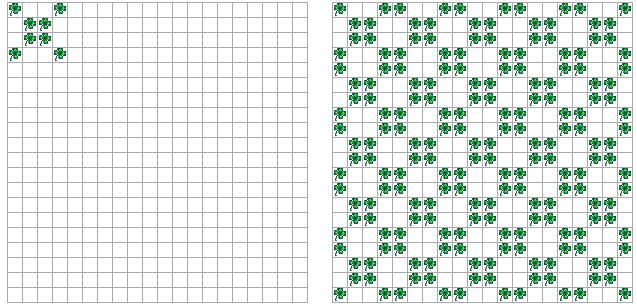

Schreiben Sie ein Programm, das ein 4x4 Felder grosses Muster in eine 20x20 Felder grosse Welt kopiert, so dass am Ende das Muster 25x zu sehen ist!
Es gibt viele verschiedene Lösungsansätze. Eine kompakte Lösung verwendet vierfach geschachtelte Schleifen. Können Sie sich vorstellen, welche Schleife welche Funktion hat? Hinweis: Die Lösung wird dadurch vereinfacht, dass auch die Felder mit dem Orginalmuster beim Kopieren überschrieben werden.